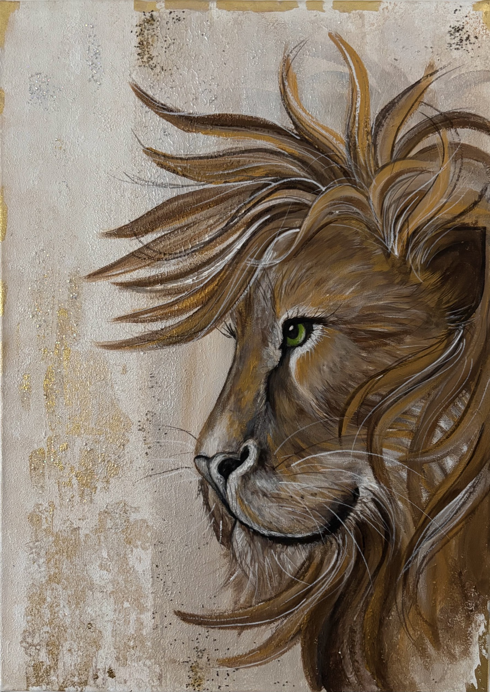

Fine Art & Malerei
Eine kuratierte Sammlung origineller Gemälde — entstanden aus der stillen Verbindung von künstlerischem Ausdruck, persönlicher Geschichte und christlichem Glauben.
Kunstwerke entdecken
Löwe von Juda, 2026
Ausgewählte Werke
“Jede Linie und jede Farbe ist ein Akt des Vertrauens.”
Vollständige Sammlung
Gemälde aus den Bereichen Glaube & Symbolik, Tiere & Natur sowie Porträt & stille Momente.
Die Künstlerin
„Ich heiße Patricia Leonard und lebe in Villach. Mein Glaube ist das Fundament meines Lebens und die Quelle meiner Kunst. In ihm finde ich Kraft, Orientierung und Sinn. Meine Werke entstehen aus einer tiefen Verbindung zu Gott und tragen das Wort Gottes in sich – als Zeichen der Hoffnung, der Liebe und der Wahrheit. Kunst ist für mich eine Sprache des Herzens, durch die ich ausdrücken darf, was Worte allein oft nicht vermögen.”
„Meine Mission ist es, den Glauben durch meine Kunst weiterzugeben und Menschen daran zu erinnern, dass sie niemals allein sind. Ich glaube daran, dass Gott durch kreative Ausdrucksformen wirkt und Herzen berührt. Mit großer Begeisterung erschaffe ich Werke, die Licht in Dunkelheit bringen, Mut schenken und den Blick auf das Ewige lenken. Jede Linie und jede Farbe ist ein Akt des Vertrauens – und ein Schritt, das Wort Gottes sichtbar in die Welt zu tragen.”
Patricia Leonard
Glaube & Kunst
Kunst und Glaube sind für mich untrennbar miteinander verbunden. Jedes Werk beginnt mit einem stillen Gebet und endet als sichtbares Zeugnis dessen, was Worte allein oft nicht auszudrücken vermögen.